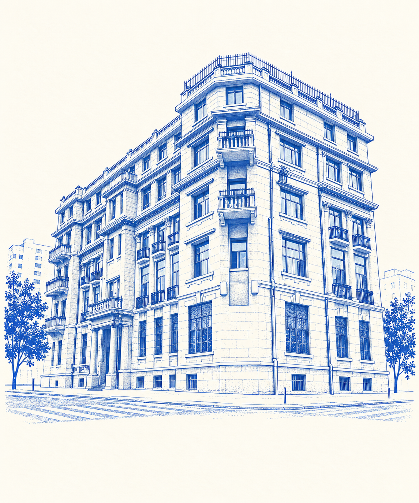

建筑风格
先看台基和入口，再看高窗、阳台和贴墙柱。它保留古典建筑的三段式组织，同时带有20世纪初装饰主义倾向。
1924年 武汉市江岸区胜利街99号

先看建筑，再讲报纸如何把武汉接入更大的传播网络。
先看台基和入口，再看高窗、阳台和贴墙柱。它保留古典建筑的三段式组织，同时带有20世纪初装饰主义倾向。
1924年建成的英文《楚报》，英文名为 Central China Post。报馆服务报社、编辑办公和新闻信息交换。
1904年创办，1911年改为日刊；1924年报社大楼落成；1938年武汉沦陷后仍继续出版；1941年被日军查封。
它不是只属于老式建筑的遗迹，也是一个曾经把武汉的地方新闻送进更大传播网络的现场。今天它仍被记录在文物保护单位名录中。
现场收尾：今天它仍是文物保护单位名录中的英文楚报馆旧址。